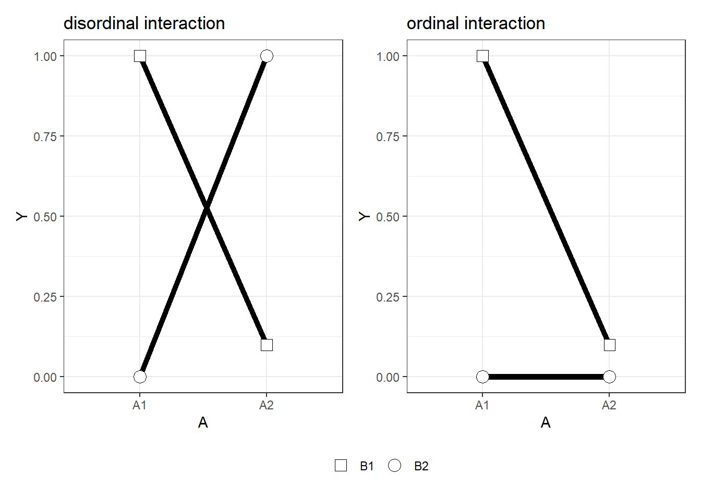

2 Justifying the Number of Observations
When you perform an experiment, you want it to provide an answer to your research question that is as informative as possible. However, since all scientists are faced with resource limitations, you need to balance the cost of collecting each additional datapoint against the increase in information that datapoint provides. In economics, this is known as the Value of Information (Eckermann et al., 2010). Calculating the value of information is notoriously difficult. You need to specify the costs and benefits of possible outcomes of the study, and quantifying a utility function for scientific research is not easy.
Because of the difficulty of quantifying the value of information, scientists use less formal approaches to justify the amount of data they set out to collect. That is, if they provide a justification for the number of observations to begin with. Even though in some fields a justification for the number of observations is required when submitting a grant proposal to a science funder, a research proposal to an ethical review board, or a manuscript for submission to a journal. In some research fields, the number of observations is stated, but not justified. This makes it difficult to evaluate how informative the study was. Referees can’t just assume the number of observations is sufficient to provide an informative answer to your research question, so leaving out a justification for the number of observations is not best practice, and a reason reviewers can criticize your submitted article.
Below, several possible justifications for the number of observations are discussed. First, you might be able to collect data from the entire population. Second, you might justify the sample size based on feasibility. Since we always have resource constraints, it is good to know about feasibility justifications, even though they are rarely discussed in statistics textbooks. Third, you might want to perform an a-priori power analysis. We will discuss all these situations in turn. Before we do so, we need to get some terminology out of the way.
When single observations are collected from participants in a study, the number of observations equals the sample size. In these cases, we can use a justification for the number of observations and a sample size justification interchangeably. When multiple observations from single individuals can be collected, if is preferable to refer to a justification for the number of observations, instead of a sample size justification. Although you’ll mostly see the current topic discussed as ‘sample size justification’ there will always be a perception researcher who reminds you they collect 400 observations from three subjects and get highly informative results.
Statistical power is the probability of a test to yield a statistically significant result if the alternative hypothesis is true (Aberson, 2019; Cohen, 1988). Power depends on the Type 1 error rate (α), the true effect size in the population, and the number of observations. Because the true effect size is typically unknown, it makes most sense to speak about the power function. In Figure 2.1 you see a power curve for an independent t-test, with an alpha level of 0.05. We see that as the effect size (in Cohen’s d) increases, power increases. If the effect you study has an effect size of 0.5, you would have almost 70% power with 50 observations in each independent group (indicated by the red dot). If the true effect size is smaller, power is lower, and as the effect size is larger, power is larger.

Figure 2.1: Power curve for an independent t-test as a function of the true effect size.
Power analysis is the practice of computing the effect size, desired power, sample size, or alpha level from the other three values. Computing the required sample size is commonly referred to as a-priori power analysis, computing the smallest effect size you have the desired power for is called sensitivty power analysis, computing the alpha level is called criterion power analysis, and computing the achieved power is called post-hoc power analysis. We will discuss all these different types of power analysis below. With this terminology out of the way, let’s examine different ways to justify the number of observations.
2.1 Measuring the Entire Population
In some instances it might be possible to collect data from the entire population under examination. For example, you might be interested in the average amount of time people spend on the moon, whenever they visit it. Since there are only 12 people who have ever been on the moon, we can calculate the average time people have spent on the moon by collecting data from the entire population. Whenever it is possible to measure the entire population, the justification for the number of observations is that you collected all the data that is available. This is the simplest, and most straightforward, justification for the number of observations. However, it is also quite rare that we are able to measure the entire population.
2.2 Feasibility
A common reason why a specific number of observations is collected is because collecting more data was not feasible. Note that all decisions for the number of observations we collect in a study are based on the resources we have available in some way. A feasibility justification makes these resource limitations the primary reason for the number of observations that are collected. Because we always have resource limitations in science, even when feasibility is not our primary justification for the number of observations we plan to collect, it is always a secondary reason. Despite the omnipresence of resource limitations, the topic often receives very little attention in texts on experimental design. This might make it feel like a feasibility justification is not appropriate, and you should perform an a-priori power analysis or plan for a desired precision instead. But feasibility always plays a secondary role, and therefore regardless of which justification for the number of observations you provide, you will almost always need to include a feasibility justification as well.
Time and money are the two main resource limitations a scientist faces. Our master students write their thesis in 6 months, and therefore their data collection is necessarily limited in whatever can be collected in 6 months, minus the time needed to formulate a research question, design an experiment, analyze the data, and write up the thesis. A PhD student at our department would have 4 years to complete their thesis, but is also expected to complete multiple research lines in this time. In addition to limitations on time, we have limited financial resources. Although nowadays it is possible to collect data online quickly, if you offer participants a decent pay (as you should) most researchers have the financial means to collect thousands of datapoints.
A feasibility justification puts the limited resources at the center of the justification for the number of observations that will be collected. For example, one might argue that 120 observations is the most that can be collected in the three weeks a master student has available to collect data, when each observation takes an hour to collect. A PhD student might collect data until the end of the academic year, and then needs to write up the results over the summer to stay on track to complete the thesis in time.
A feasibility justification thus starts with the expected number of observations (N) that a researcher expects to be able to collect. The challenge is to evaluate whether collecting N observations is worthwhile. The answer should sometimes be that data collection is not worthwhile. For example, assume I plan to manipulate the mood of participants using funny cartoons and then measure the effect of mood on some dependent variable - say the amount of money people donate to charity. I should expect an effect size around d = 0.31 for the mood manipulation (Joseph et al., 2020), and seems unlikely that the effect on donations will be larger than the effect size of the manipulation. If I can only collect mood data from 30 participants in total, how do we decide if this study will be informative?
First of all, more data is always better than no data, so in an absolute sense, all additional data that is collected is better than not collecting data. However, in line with the idea that we need to take into account costs and benefits, it is possible that the cost of data collection outweigh the benefits. To determine this, one needs to think about what the benefits of having the data are. The benefits are clearest when we know for certain that someone is going to make a decision, with or without data. If this is the case, then any data you collect will reduce the error rates of a well-calibrated decision process, even if only ever so slightly. In these cases, the value of information might be positive, as long as the reduction in error rates is more beneficial than the costs of data collection.
Another way in which a small dataset can be valuable is if its existence makes it possible to combine several small datasets into a meta-analysis. This argument in favor of collecting a small dataset requires 1) that you share the results in a way that a future meta-analyst can find them, and 2) that there is a decent probability that someone will perform a meta-analysis in the future which inclusion criteria would contain your study, because a sufficient number of small studies exist. The uncertainty about whether there will ever be such a meta-analysis should be weighed against the costs of data collection. One way to increase the probability of a future meta-analysis is if you commit to performing this yourself in the future. For example, you might plan to repeat a study for the next 12 years in a class you teach, with the expectation that a meta-analysis of 360 participants would be sufficient to achieve around 90% power for d = 0.31. If it is not plausible you will collect all the required data by yourself, you can attempt to set up a collaboration, where fellow researchers in your field commit to collecting similar data, with identical measures, over the next years. If it is not likely sufficient data will emerge over time, we will not be able to draw informative conclusions from the data, and it might be more beneficial to not collect the data to begin with, and examine an alternative research question with a larger effect size instead.
Even if you believe over time sufficient data will emerge, you will most likely compute statistics after collecting a small number of observations. Before embarking on a study where your main justification for the number of observations is based on feasibility, you can expect. I propose that a feasibility justification for the number of observations is always accompanied by three statistics, detailed in the following three sections.
2.2.1 The smallest effect size that can be statistically significant
In Figure 2.2 the distribution of Cohen’s d given 15 participants per group is plotted when the true effect size is 0 (or the null-hypothesis is true), and when the true effect size is d = 0.5. The blue area is the Type 2 error rate (the probability of not finding p < α, when there is a true effect, and α = 0.05).

Figure 2.2: Null and alternative distribution, assuming d = 0.5, alpha = 0.05, and N = 15 per group.
You might seen such graphs before. The only thing I have done is to transform the t-value distribution that is commonly used in these graphs, and calculated the distribution for Cohen’s d. This is a straightforward transformation, but instead of presenting the critical t-value the figure provides the critical d-value. For a two-sided independent t-test, this is calculated as:
where ‘a’ is the alpha level (e.g., 0.05) and N is the sample size in each independent group. For the example above, where alpha is 0.05 and n = 15:
## [1] 0.7479725The critical t-value (2.0484071) is also provided in commonly used power analysis software such as G*Power. We can compute the critical Cohen’s d from the t-value and sample size using: \(d = t{\sqrt{1/n_1 + 1/n_2}}\).

Figure 2.3: The critical t-value is provided by G*Power software.
When you will test an association between variables with a correlation, G*Power will directly provide you with the critical effect size. When you compute a correlation based on a two-sided test, your alpha level is 0.05, and you have 30 observations, only effects larger than r = 0.361 will be statistically significant. In other words, the effect needs to be quite large to even have the mathematical possibility of becoming statistically significant.

Figure 2.4: The critical r is provided by G*Power software.
The critical effect size gives you information about the smallest effect size that, if observed, would by statistically significant. If you observe a smaller effect size, the p-value will be larger than your significance threshold. You always have some probability of observing effects larger than the critical effect size. After all, even if the null hypothesis is true, 5% of your tests will yield a significant effect. But what you should ask yourself is whether the effect sizes that could be statistically significant are realistically what you would expect to find. If this is not the case, it should be clear that there is no use in performing a significance test. Mathematically, when the critical effect size is larger than effects you expect, your statistical power will be less than 50% (see the section on observed power). If you perform a statistical test with less than 50% power, your single study is not very informative.
2.2.2 Compute the width of the confidence interval around the effect size
The second statistic to report alongside a feasibility justification is the width of the 95% confidence interval around the effect size. As we saw in the section on confidence intervals they represent a range that is wide enough so that in the long run in 95% of repetitions of the same experiment the true population parameter falls within each confidence interval calculated around the observed effect size. Cumming (2013) calls the difference between the observed effect size and the upper 95% confidence interval (or the lower 95% confidence interval) the margin of error (MOE).
# Compute the effect size d and 95% CI
res <- d.ind.t(m1 = 0, m2 = 0, sd1 = 1, sd2 = 1, n1 = 15, n2 = 15, a = .05)
# Print the result
res$estimate## [1] "$d_s$ = 0.00, 95\\% CI [-0.72, 0.72]"## [1] 0.7156777# For non-zero effects the CI is based on the non-central t
# The MOE is then asymmetric (but differences are very small)
(res$d - res$dlow)## [1] 0.7156777## [1] 0.7156777If we compute the 95% CI for an effect size of 0, we see that with 15 observations in each condition of an independent t-test the 95% CI ranges from -0.72 to 0.72. The MOE is half the width of the 95% CI, 0.72. This clearly shows we have a very imprecise estimate. A Bayesian estimator who uses an uninformative prior would compute a credible interval with the same upper and lower bound (Albers et al., 2018), and might conclude they personally believe there is a 95% chance the true effect size lies in this interval. A frequentist would reason more hypothetically: If the observed effect size in the data I plan to collect is 0, I could only reject effects more extreme than d = 0.72 in an equivalence test with a 5% alpha level (even though if such a test would be performed, power might be low, depending on the true effect size). Regardless of the statistical philosophy you plan to rely on when analyzing the data, both of these conclusions are pretty much trivial. Effect sizes in this range are findings such as “People become aggressive when they are provoked”, “People prefer their own group to other groups”, and “Romantic partners resemble one another in physical attractiveness” (Richard et al., 2003). If you can only reject the presence of effects that are so large people would clearly notice them, there is typically little need to collect data, as we do not learn something we didn’t already know.
We see this the MOE is almost, but not exactly, the same as the critical effect size d we observed above (d = 0.7479725). The reason for this is that the 95% confidence interval is calculated based on the tdistribution. If the true effect size is not zero, the confidence interval is calculated based on the non-central tdistribution, and the 95% CI is asymmetric. Figure 2.5 vizualizes three t-distributions, one symmetric at 0, and two asymmetric distributions with a noncentrality parameter of 2 and 3. The asymmetry is most clearly visible in very small samples (the distribution in the plot have 5 degrees of freedom) but remain noticeablewhen calculating confidence intervals and statistical power. For example, for a true effect size of d = 0.5 the 95% CI is \(d_s\) = 0.50, 95\% CI [-0.23, 1.22]. The MOE based on the lower bound is 0.7317584 and based on the upper bound is 0.7231479. If we compute the 95% CI around the critical effect size (d = 0.7479725) we see the 95% CI ranges from exactly 0.00 to 1.48. As explained in the section on the relation between a confidence interval and a p-value, if the 95% CI excludes zero, the test is statistically significant. In this case the lowerbound of the confidence interval exactly touches 0, which means we would observe a p = 0.05 if we exactly observed the critical effect size.
Figure 2.5: Central (black) and 2 non-central (red and blue) t-distributions.
Where computing the critical effect size can make it clear that a p-value is of little interest, computing the 95% CI around the effect size can make it clear that the effect size estimate is of little value. It will often be so uncertain, and the range of effect sizes you will not be able to reject if there is no effect is so large, the effect size estimate is not very useful. This is also the reason why performing a pilot study to estimate an effect size for an a-priori power analysis is not a sensible strategy (???; Leon et al., 2011). However, it is possible that the sample size is large enough to exclude some effect sizes that are still a-priori plausible. For example, with 50 observations in each independent group, you have 82% power for an equivalence test with bounds of -0.6 and 0.6, and if effect larger than 0.6 can be rejected, this might be sufficient to tentatively start to question claims of even larger effects in the literature.
2.2.3 Plot a sensitivity power analysis

Figure 2.6: Sensitivity power analysis in G*Power software.
In a sensitivity power analysis the sample size and the alpha level are fixed, and you compute the effect size you have the desired statistical power to detect. For example, in Figure 2.6 the number of observations in each group is set to 15, the alpha level is 0.05, and the desired power is set to 90%. The sensitivity power analysis shows we have 90% power to detect an effect of d = 1.23. Perhaps you feel a power of 90% is a bit high, and you would be happy with 80% power. In Figure 2.7 we see that if we desire 80% power, the effect size should be d = 1.06. The smaller the true effect size, the lower the power we have. This plot should again remind us not to put too much faith in a significance test when are sample size is small, since for 15 observations in each condition, statistical power is very low for anything but extremely large effect sizes.
Figure 2.7: Plot of the effect size against the desired power when n = 15 per group and alpha = 0.05.
If we look at the effect size that we would have 50% power for, we see it is d = 0.7411272. This is very close to our critical effect size of d = 0.7479725 (the smallest effect size that, if observed, would be significant). The difference is due to the non-central t-distribution (see Figure 2.5. If the distribution was symmetric, observing an effect size exactly on the critical value would mean half of the distirbution is smaller than the critical effect size, and half of the distribution is larger, and we would have exactly 50% power for the critical effect size. Because the distribution is not symmetrical, we need to find the critical effect size for which it is true that half the distribution falls below it, and half the distribution falls above it. This value can’t be calculated directly, and requires an iterative procedure that optimizes the values of the non-centrality parameter such that power is exactly 50% (Smithson, 2003). The pwr package in R can calculate this effect size in a sensitivity analysis where we enter the sample size (per group), the alpha level, and the desired power for a two-sided independent t-test, which will return d = 0.7411272. We can check this true effect size would indeed give with 50% power (but feel free to skip these technicalities).
# Sensitivity power analysis
pwr::pwr.t.test(n = 15,
sig.level = 0.05,
power = 0.5,
type = "two.sample",
alternative = "two.sided")##
## Two-sample t test power calculation
##
## n = 15
## d = 0.7411272
## sig.level = 0.05
## power = 0.5
## alternative = two.sided
##
## NOTE: n is number in *each* group# d = 0.7411272 - let's check this indeed gives 50% power
# We compute the non-centrality parameter delta
delta <- 0.7411272 * sqrt(15/2)
# For a 2-sided test power is the probability of finding a result that is
# 1) larger than the critical value of 2.0484071, which is: 0.4999563
# 2) We need to add the tiny probability that we find a significant result in
# the opposite direction. This will rarely happen: 0.00004372648
# Together these two probabilities make exactly 50%:
1-pt(2.0484071, 28, 2.0296604) + pt(-2.0484071, 28, 2.0296604)## [1] 0.52.2.4 Reporting a feasibility justification.
To summarize, I recommend addressing the following components in a feasibility sample size justification. Addressing these points explicitly will allow you to evaluate for yourself if collecting the data will have scientific value. If not, there might be other reasons to collect the data. For example, at our department, students often collect data as part of their education. However, if the primary goal of data collection is educational, the number of observations that is collected can be very small. It is often educational to collect data from a small number of participants to experience what data collection looks like in practice, but there is often no educational value in collecting data from more than 10 participants. Despite the small sample size, we often require students to report statistical analyses as part of their education, which is fine as long as it is clear the numbers that are calculated can not meaningfully be interpreted. Table 2.1 should help to evaluate if the interpretation of statistical tests has any value, or not.
| What to address | Example? |
|---|---|
| Will a future meta-analysis be performed? | Consider the plausibility that sufficient highly similar studies will be performed in the future to, eventually, make a met-analysis possible |
| Will a decision be made, regardless of the amount of data that is available? | If it is known that a decision will be made, with or without data, then any data you collect will reduce error rates. |
| What is the critical effect size? | Report and interpret the critical effect size, with a focus on whether a hypothesis test would even be significant for expected effect sizes. If not, indicate you will not interpret the data based on p-values. |
| What is the width of the confidence interval? | Report and interpret the width of the confidence interval. What will an estimate with this much uncertainty be useful for? If the null hypothesis is true, would rejecting effects outside of the confidence interval be worthwhile (ignoring you might have low power to actually test against these values)? |
| Which effect sizes would you have decent power to detect? | Report a sensitivity power analysis, and report the effect sizes you could detect across a range of desired power levels (e.g., 80%, 90%, and 95%), or plot a sensitivity curve of effect sizes against desired power. |
If the study is not performed for educational purposes, but the goal is answer a research question, the feasibility justification might indicate that there is no value in collecting the data. If it wasn’t possible to conclude that one should not proceed with the data collection, there is no use of justifying the sample size. There should be cases where it is unlikely there will ever be enough data to perform a meta-analysis (for example because of a lack of general interest in the topic), the information will not be used to make any decisions, and the statistical tests do not allow you to test a hypothesis or estimate an effect size estimate with any useful accuracy. It should be a feasibility justification - not a feasibility excuse. If there is no good justification to collect the maximum number of observations that is feasible, performing the study nevertheless is a waste of participants time, and/or a waste of money if data collection has associated costs. Collecting data without a good justification why the planned number of observations will yield worthwhile information has an ethical component. As Button and colleagues Button et al. (2013) write: “Low power therefore has an ethical dimension — unreliable research is inefficient and wasteful. This applies to both human and animal research”. Think carefully if you can defend data collection based on a feasibility justification. Sometimes data collection is just not feasible, and we should accept this.
2.3 A-priori power analysis
When designing a study where the goal is to observe a statistically significant effect, researchers often want to make sure their sample size is large enough to have sufficient power to detect effects they expect, or effects they are interested in observing. This is done by performing an a-priori power analysis. Given a specified effect size, alpha level, and desired power, an a-priori power analysis will inform you about the sample size you need to collect. In Figure 2.8 you see how the statistical power increases as the number of observations (per group) in an independent t-test with an alpha level of 0.05 increases.

Figure 2.8: Power curve for an independent t-test as a function of the sample size.
In Figure 2.9 you see two distributions, one centered at 0, and one centered at an effect of d = 0.5.
Figure 2.9: Null and alternative distribution, assuming d = 0.5, alpha = 0.05, and N = 86 per group.
2.3.1 Types of power analysis
In an a-priori power analysis one uses the effect size, desired power, and alpha level to compute the required sample size. If we plan to perform a two-sided t-test, want to have 90% power for an effect size of d = 0.5, given an alpha level of 0.01, we will need a sample size of 121 in each independent group.
power.t.test(delta = 0.5,
sig.level = 0.01,
power = 0.9,
type = "two.sample",
alternative = "two.sided")##
## Two-sample t test power calculation
##
## n = 120.7055
## delta = 0.5
## sd = 1
## sig.level = 0.01
## power = 0.9
## alternative = two.sided
##
## NOTE: n is number in *each* groupSometimes the sample size you can collect is fixed. In that case you can perform a sensitivity power analysis to examine the effect sizes you can detect with a desired power. If we plan to perform a two-sided t-test, and can collect at most 70 observations in each independent group, and we want to have 90% power, given an alpha level of 0.01, we only have 90% power for effects of d = 0.66. We could still get lucky find a significant effect if the population effect size is smaller than 0.66, but we would no longer control our Type 2 error rate (1-power) at 10%.
##
## Two-sample t test power calculation
##
## n = 70
## delta = 0.6599737
## sd = 1
## sig.level = 0.01
## power = 0.9
## alternative = two.sided
##
## NOTE: n is number in *each* groupIn a criterion power analysis one computes the alpha level one should choose to achieve a desired power, given a sample size and an expectation of the population effect size. If we plan to perform a two-sided t-test, and can collect at most 70 observations in each independent group, and we want to have 90% power, and expect a population effect size of 0.5, we would need to set the alpha level to 0.0966. We can use a lower alpha level, but then our power would be smaller. If we assume we can not increase our number of observations beyond 70 per group, we need to make a trade-off between increasing our Type 1 error rate, or our Type 2 error rate. As Neyman and Pearson Neyman & Pearson (1933) write: “The use of these statistical tools in any given case, in determining just how the balance should be struck, must be left to the investigator.”
power.t.test(n = 70,
delta = 0.5,
sig.level = NULL,
power = 0.9,
type = "two.sample",
alternative = "two.sided")##
## Two-sample t test power calculation
##
## n = 70
## delta = 0.5
## sd = 1
## sig.level = 0.09656667
## power = 0.9
## alternative = two.sided
##
## NOTE: n is number in *each* groupNote that power calculations are performed under the assumption that there is an effect. In practice, it is of course also possible that there is no effect, or d = 0. In that case, regardless of the sample size, you will observe significance results at your chosen alpha level.
Therefore, probability of observing a significant or non-significant result in a study depends on the Type 1 error rate (α), the statistical power of the test (1-β), and the probability that the null-hypothesis is true. A study might examine a true effect, which means the alternative hypothesis (H1) is true (e.g., a correlation that differs from zero) or it might examine a null effect, which means the null-hypothesis (H0) is true (e.g., a correlation that is zero). When performing a statistical test on data, the test result might be statistically significant at a specified alpha level (p < α) or not. Thus, there are four possible outcomes of a study:

Figure 2.10: Four possible outcomes in a null hypothesis significance test.
- False positives or Type 1 errors (you observe a significant test result when H0 is true)
- False negatives or Type 2 errors (you observe a non-significant result when H1 is true)
- True negatives (a non-significant result when H0 is true)
- True positives (a significant test result when H1 is true)
The goal of an a-priori power analysis is to increase the sample size up to the level that the desired power is achieved for an effect size one is interested in detecting, but one should always consider the possibility that the effect size is 0. In practice, one can design a study assuming both the presence and the absence of an effect by performing an a-priori power analysis for a null-hypothesis significance test, assuming there is an effect, and an a-priori power analysis for an equivalence test, assuming the true effect size is 0. We will demonstrate some practical examples in the next sections.
2.4 How to justify your sample size based on a power analysis.
One challenge in power analysis is that you never know the true effect size. This leads to the ‘sample size samba’ (Schulz & Grimes, 2005). Researchers go back and forth between the effect size they expect, and the sample size they are willing to collect, until they ‘expect’ the effect size that, in an a-priori power analysis, leads to the sample size they are willing to collect. This practice obviously makes a power analysis a useless procedure.
One might be tempted to perform a small power analysis to estimate the effect size, and use this effect size estimate in an a-priori power analysis. Regrettably, this is not a recommended solution. First, effect size estimates from small pilot studies are highly uncertain , which means the estimate can easily be much smaller or larger than the population effect size (which can be seen by the width of the confidence interval around the effect size estimate). Second, such a procedure inevitably leads to bias, because you will only perform studies when the pilot provided an effect size estimates that, when entered in an a-priori power analysis, yielded a sample size that was feasible to collect. Since you only follow up on pilot studies when the effect size estimate is sufficiently large, this inevitably leads to ‘follow-up bias’
What can be done? The recommended best practice is to not enter the effect size you expect, but the smallest effect size you would still be interested in. By doing this, you will be able to design a study that has sufficient power for the smallest effect you find worthwhile to observe, even when you do not know what the true effect size is. By determining the required sample size for the smallest effect size of interest, you can guarantee you have designed an informative study. However, in case the true effect size is larger than your smallest effect size of interest, you might collect many more participants than required. This can be solved by performing sequential analyses, where you analyze the data intermittently, while controlling the Type 1 error rate for multiple looks at the data. We will explain sequential analyses later.
2.5 Observed power, and what to do if your editor asks for post-hoc power analyses
Observed power (or post-hoc power) is the statistical power of the test you have performed, based on the effect size estimate from your data. Statistical power is the probability of finding a statistical difference from 0 in your test (aka a ‘significant effect’), if there is a true difference to be found. Observed power differs from the true power of your test, because the true power depends on the true effect size you are examining. However, the true effect size is typically unknown, and therefore it is tempting to treat post-hoc power as if it is similar to the true power of your study. In this blog, I will explain why you should never calculate the observed power (except for blogs about why you should not use observed power). Observed power is a useless statistical concept, and at the end of the post, I’ll give a suggestion how to respond to editors who ask for post-hoc power analyses.
Observed (or post-hoc) power and p-values are directly related. Below, you can see a plot of observed p-values and observed power for 10000 simulated studies with approximately 50% power (the R code is included below). It looks like a curve, but the graph is basically a scatter plot of a large number of single observations that fall on a curve expressing the relation between observed power and p-values.

Figure 2.11: Distribution of p-values plotted against observed power with low power.
Below, you see a plot of p-values and observed power for 10000 simulated studies with approximately 90% power. Yes, that is exactly the same curve these observations fall on. The only difference is how often we actually observe high p-values (or have low observed power). You can see there are only a few observations with high p-values if we have high power (compared to medium power), but the curve stays exactly the same. I hope these two figures drive home the point of what it means that p-values and observed power are directly related: it means that you can directly convert your p-value to the observed power, regardless of your sample size or effect size.

Figure 2.12: Distribution of p-values plotted against observed power with high power.
Let’s draw a vertical line at p = 0.05, and a horizontal line at 50% observed power. We can see below that the two lines meet exactly at the line visualizing the relationship between p-values and observed power. This means that anytime you observed a p-value of p = 0.05 in your data, your observed power will be 50% (in infinite sample sizes, in t-tests - Jake Westfall pointed me to this paper showing the values at smaller samples, and for F-tests with different degrees of freedom).

Figure 2.13: Distribution of p-values plotted against observed power showing the correspondence of p = 0.05 and 50% power.
I noticed these facts about the relationship between observed power and p-values while playing around with simulated studies in R, but they are also explained in Hoenig& Heisey, 2001.
Some estimates (e.g., Cohen, 1962) put the average power of studies in psychology at 50%. What observed power can you expect, when you perform a lot of studies which have a true power of 50%? We know that the p-values we can expect should be split down the middle, with 50% being smaller than p = 0.05, and 50% being larger than p = 0.05. The graph below gives the p-value distribution for 100000 simulated independent t-tests:
The bar on the left are all (50.000 out of 100.000) test results with a p < 0.05. The observed power distribution is displayed below:
It is clear you can expect just about any observed power when the true power of your experiment is 50%. The distribution of observed power changes from positively skewed to negatively skewed as the true power increases (from 0 to 1), and when power is around 50% we observe a tipping point where there is a switch from a negatively skewed distribution to a positively skewed distribution. With slightly more power (e.g., 56%) the distribution becomes somewhat U-shaped, as can be seen in the figure below. I’m sure a mathematical statistician can explain the why and how of this distribution in more detail, but here I just wanted to show what it looks like, because I don’t know of any other sources of information where this distribution is reported (thanks to a reader, who in the comments points out Yuan & Maxwell, 2005 also discuss observed power distributions).
Editors asking for post-hoc power analyses
Editors sometimes ask researchers to report post-hoc power analyses when authors report a test that does not reveal a statistical difference from 0, and when authors want to conclude there is no effect. In such situations, editors would like to distinguish between true negatives (concluding there is no effect, when there is no effect) and false negatives (concluding there is no effect, when there actually is an effect, or a Type 2 error). As the preceding explanation of post-hoc power hopefully illustrates, reporting post-hoc power is nothing more than reporting the p-value in a different way, and will therefore not answer the question editors want to know.
Because you will always have low observed power when you report non-significant effects, you should never perform an observed or post-hoc power analysis, even if an editor requests it (feel free to link to this blog post). Instead, you should explain how likely it was to observe a significant effect, given your sample, and given an expected or small effect size. Perhaps this expected effect size can be derived from theoretical predictions, or you can define a smallest effect size of interest (e.g., you are interested in knowing whether an effect is larger than a ‘small’ effect of d < 0.3).
For example, if you collected 500 participants in an independent t-test, and did not observe an effect, you had more than 90% power to observe a small effect of d = 0.3. It is always possible that the true effect size is even smaller, or that your conclusion that there is no effect is a Type 2 error, and you should acknowledge this. At the same time, given your sample size, and assuming a certain true effect size, it might be most probable that there is no effect.
2.6 Why Within-Subject Designs Typically Require Fewer Participants than Between-Subject Designs
One widely recommended approach to increase power is using a within subject design. Indeed, you need fewer participants to detect a mean difference between two conditions in a within-subjects design (in a dependent t-test) than in a between-subjects design (in an independent t-test). The reason is straightforward, but not always explained, and even less often expressed in the easy equation below. The sample size needed in within-designs (NW) relative to the sample needed in between-designs (NB), assuming normal distributions, is (from Maxwell & Delaney, 2004, p. 561, formula 45):
NW = NB (1-ρ)/2
The “/2” part of the equation is due to the fact that in a two-condition within design every participant provides two data-points. The extent to which this reduces the sample size compared to a between-subject design depends on the correlation between the two dependent variables, as indicated by the (1-ρ) part of the equation. If the correlation is 0, a within-subject design simply needs half as many participants as a between-subject design (e.g., 64 instead 128 participants). The higher the correlation, the larger the relative benefit of within designs, and whenever the correlation is negative (up to -1) the relative benefit disappears. Note than when the correlation is -1, you need 128 participants in a within-design and 128 participants in a between-design, but in a within-design you will need to collect two measurements from each participant, making a within design more work than a between-design. However, negative correlations between dependent variables in psychology are rare, and perfectly negative correlations will probably never occur.
So what does the correlation do so that it increases the power of within designs, or reduces the number of participants you need? Let’s see what effect the correlation has on power by simulating and plotting correlated data. In the R script below, I’m simulating two measurements of IQ scores with a specific sample size (i.e., 10000), mean (i.e., 100 vs 106), standard deviation (i.e., 15), and correlation between the two measurements. The script generates three plots.
We will start with a simulation where the correlation between measurements is 0. First, we see the two normally distributed IQ measurements, with means of 100 and 106, and standard deviations of 15 (due to the large sample size, the numbers equal the input in the simulation, although small variation might still occur).

Figure 2.14: Distributions of two dependent groups with means 100 and 106 and a standard deviation of 15.

Figure 2.15: Correlation between two dependent groups.
Now, let’s look at the distribution of the mean differences. The mean difference is -6 (in line with the simulation settings), and the standard deviation is 21. This is also as expected. The standard deviation of the difference scores is √2 times as large as the standard deviation in each measurement, and indeed, 15*√2 = 21.21, which is rounded to 21. This situation where the correlation between measurements is zero equals the situation in an independent t-test, where the correlation between measurements is not taken into account.

Figure 2.16: Distributions of difference scores between two dependent groups.
Now let’s increase the correlation between dependent variables to 0.7.
Nothing has changed when we plot the means:
##
## Two Sample t-test
##
## data: x and y
## t = -28.232, df = 19998, p-value < 2.2e-16
## alternative hypothesis: true difference in means is not equal to 0
## 95 percent confidence interval:
## -6.331318 -5.509260
## sample estimates:
## mean of x mean of y
## 100.1800 106.1003Figure 2.17: Distributions of two independent groups with means 100 and 106 and a standard deviation of 15.
The correlation between measurements is now strongly positive:

Figure 2.18: Correlation between two dependent groups.
The important difference lies in the standard deviation of the difference scores. The SD = 11 instead of 21 in the simulation above. Because the standardized effect size is the difference divided by the standard deviation, the effect size (Cohen’s dz in within designs) is larger in this test than in the test above.

Figure 2.19: Difference scores between two dependent groups.
if you set the correlation to a negative value, the standard deviation of the difference scores actually increases.
I like to think of dependent variables in within-designs as dance partners. If they are well-coordinated (or highly correlated), one person steps to the left, and the other person steps to the left the same distance. If there is no coordination (or no correlation), when one dance partner steps to the left, the other dance partner is just as likely to move to the wrong direction as to the right direction. Such a dance couple will take up a lot more space on the dance floor.
You see that the correlation between dependent variables is an important aspect of within designs. I recommend explicitly reporting the correlation between dependent variables in within designs (e.g., participants responded significantly slower (M = 390, SD = 44) when they used their feet than when they used their hands (M = 371, SD = 44, r = .953), t(17) = 5.98, p < 0.001, Hedges’ g = 0.43, Mdiff = 19, 95% CI [12; 26]).
Since most dependent variables in within designs in psychology are positively correlated, within designs will greatly increase the power you can achieve given the sample size you have available. Use within-designs when possible, but weigh the benefits of higher power against the downsides of order effects or carryover effects that might be problematic in a within-subject design. Maxwell and Delaney’s book (Chapter 11) has a good discussion of this topic.
You can use this Shiny app to play around with different means, sd’s, and correlations, and see the effect of the distribution of the difference scores.
2.7 Power analysis for interactions
Based on our recent preprint explaining power analysis for ANOVA designs, in this post I want provide a step-by-step mathematical overview of power analysis for interactions. These details often do not make it into tutorial papers because of word limitations, and few good free resources are available (for a paid resource worth your money, see Maxwell, Delaney, & Kelley, 2018). This post is a bit technical, but nothing in this post requires more knowedge than multiplying and dividing numbers, and I believe that for anyone willing to really understand effect sizes and power in ANOVA designs digging in to these details will be quite beneficial. There are three take-home messages in this section.
- In power analyses for ANOVA designs, you should always think of the predicted pattern of means. Different patterns of means will have the same effect size, and your intuition can not be relied on when predicting an effect size for ANOVA designs.
- Understanding how patterns of means relate to the effect you predict is essential to design an informative study.
- Always perform a power analysis if you want to test a predicted interaction effect, and always calculate the effect size based on means, sd’s, and correlations, instead of plugging in a ‘medium’ partial eta squared.
- Crossover interaction effects have large effects and can thus be studies with high power in smaller samples, and if your theory can predict crossover interactions, such experiments might be worthwhile to design.
- There are some additional benefits of examining interactions (risky predictions, generalizability, efficiently examining multiple main effects) and it would be a shame if the field is turned away from examining interactions because they sometimes require large samples.
2.7.1 Getting started: Comparing two groups
We are planning a two independent group experiment. We are using a validated measure, and we know the standard deviation of our measure is approximately 2. Psychologists are generaly horribly bad at knowing the standard deviation of their measures, even though a very defensible position is that you are not ready to perform a power analysis without solid knowledge of the standard deviation of your measure. We are interested in observing a mean difference of 1 or more, because smaller effects would not be practically meaningful. We expect the mean in the control condition to be 0, and therefore want the mean in the intervention group to be 1 or higher.
This means the standardized effect size is the mean difference, divided by the standard deviation, or 1/2 = 0.5. This is the Cohen’s d we want to be able to detect in our study:
\[\begin{equation} d = \frac{m_1-m_2}{\sigma} = \frac{1-0}{2} = 0.5. \end{equation}\]
An independent t-test is mathematically identical to an F-test with two groups. For an F-test, the effect size used for power analyses is Cohen’s f, which is a generalization of Cohen’s d to more than two groups (Cohen, 1988). It is calculated based on the standard deviation of the population means divided by the population standard deviation which we know for our measure is 2), or:
\[\begin{equation} f = \frac{\sigma _{ m }}{\sigma} \end{equation}\] where for equal sample sizes, \[\begin{equation} \sigma _{ m } = \sqrt { \frac { \sum_ { i = 1 } ^ { k } ( m _ { i } - m ) ^ { 2 } } { k } }. \end{equation}\]
In this formula m is the grand mean, k is the number of means, and m_i is the mean in each group. The formula above might look a bit daunting, but calculating Cohen’s f is not that difficult for two groups.
If we take the expected means of 0 and 1, and a standard deviation of 2, the grand mean (the m in the formula above) is (0 + 1)/2 = 0.5. The formula says we should subtract this grand mean from the mean of each group, square this value, and sum them. So we have (0-0.5)^2 and (1-0.5)^2, which are both 0.25. We sum these values (0.25 + 0.25 = 0.5), divide them by the number of groups (0.5/2 = 0.25) and take the square root, we find that \(\sigma_{ m }\) = 0.5. We can now calculate Cohen’s f (remember than we know \(\sigma\) = 2 for our measure):
\[\begin{equation} f = \frac{\sigma _{ m }}{\sigma} = \frac{0.5}{2} = 0.25 \end{equation}\]
We see that for two groups Cohen’s f is half as large as Cohen’s d, or \(f = \frac{1}{2}d\), which always holds for an F-test with two independent groups.
Although calculating effect sizes by hand is obviously an incredibly enjoyable thing to do, you might prefer using software that performs these calculations for you. Here, I will use our Superpower power analysis package (developed by Aaron Caldwell and me). The code below uses a function from the package that computes power analytically for a one-way ANOVA where all conditions are manipulated between participants. In addition to the effect size, the function will compute power for any sample size per condition you enter. Let’s assume you have a friend who told you that they heard from someone else that you now need to use 50 observations in each condition (n = 50), so you plan to follow this trustworthy advice. We see the code below returns a Cohen’s f of 0.25, and also tells us we would have 61.78% power if we use a preregistered alpha level of 0.03.

## [1] 0.25## [1] 61.78474We therefore might want to increase our sample size for our planned study. Using the plot_power function, we can see we would pass 90% power with 100 observations per condition.

## Achieved Power and Sample Size for ANOVA-level effects
## variable label n achieved_power desired_power
## 1 a Desired Power Achieved 96 90.13 90
2.7.2 Interaction Effects
So far we have explained the basics for effect size calculations (and we have looked at statistical power) for 2 group ANOVA designs. Now we have the basis to look at interaction effects.
One of the main points in this blog post is that it is better to talk about interactions in ANOVAs in terms of the pattern of means, standard deviations, and correlations, than in terms of a standarized effect size. The reason for this is that, while for two groups a difference between means directly relates to a Cohen’s d, wildly different patterns of means in an ANOVA will have the same Cohen’s f. In my experience helping colleagues out their with power analyses for ANOVA designs, talking about effects in terms of a Cohen’s f is rarely a good place to start when thinking about what your hypothesis predicts. Instead, you need to specify the predicted pattern of means, have some knowledge about the standard deviation of your measure, and then calculate your predicted effect size.
There are two types of interactions, as visualized below. In an ordinal interaction, the mean of one group (“B1”) is always higher than the mean for the other group (“B2”). Disordinal interactions are also known as ‘cross-over’ interactions, and occur when the group with the larger mean switches over. The difference is important, since another main takeaway of this blog post is that, in two studies where the largest simple comparison has the same effect size, a study with a disordinal interaction has much higher power than a study with an ordinal interaction. Thus, if possible, you will want to design experiments where an effect in one condition flips around in the other condition, instead of an experiment where the effect in the other condition just disappears. I personally never realized this before I learned how to compute power for interactions, and never took this simple but important fact into account. Let’s see why it is important.
2.7.3 Calculating effect sizes for interactions

Mathematically the interaction effect is computed as the cell mean minus the sum of the grand mean, the marginal mean in each condition of one factor minus the grand mean, and the marginal mean in each condition for the other factor minus grand mean (see Maxwell et al., 2017).
Let’s consider two cases comparable to the figure above, one where we have a perfect disordinal interaction (the means of 0 and 1 flip around in the other condition, and are 1 and 0) or an ordinal interaction (the effect is present in one condition, with means of 0 and 1, but there is no effect in the other condition, and both means are 0). We can calcuate the interaction effect as follows. First, let’s look at the interaction in a 2x2 matrix:

## a1 a2
## b1 1 0
## b2 0 1The grand mean is (1 + 0 + 0 + 1) / 4 = 0.5.
We can compute the marginal means for A1, A2, B1, and B2, which is simply averaging per row and column, which gets us for the A1 column (1+0)/2=0.5. For this perfect disordinal interaction, all marginal means are 0.5. This means there are no main effects. There is no main effect of factor A (because the marginal means for A1 and A2 are both exactly 0.5), nor is there a main effect of B.
We can also calculate the interaction effect. For each cell we take the value in the cell (e.g., for a1b1 this is 1) and compute the difference between the cell mean and the additive effect of the two factors as:
1 - (the grand mean of 0.5 + (the marginal mean of a1 minus the grand mean, or 0.5 - 0.5 = 0) + (the marginal mean of b1 minus the grand mean, or 0.5 - 0.5 = 0)). Thus, for each cell we get:
a1b1: 1 - (0.5 + (0.5 -0.5) + (0.5 -0.5)) = 0.5
a1b2: 0 - (0.5 + (0.5 -0.5) + (0.5 -0.5)) = -0.5
a2b1: 0 - (0.5 + (0.5 -0.5) + (0.5 -0.5)) = -0.5
a2b2: 1 - (0.5 + (0.5 -0.5) + (0.5 -0.5)) = 0.5
Cohen’s \(f\) is then \(f = \frac { \sqrt { \frac { 0.5^2 +-0.5^2 + -0.5^2 + 0.5^2 } { 4 } }}{ 2 } = 0.25\)
or in R code: sqrt(((0.5)^2 +(-0.5)^2 + (-0.5)^2 + (0.5)^2)/4)/2 = 0.25.
For the ordinal interaction the grand mean is (1 + 0 + 0 + 0) / 4, or 0.25. The marginal means are a1: 0.5, a2: 0, b1: 0.5, and b2: 0.
Completing the calculation for all four cells for the ordinal interaction gives:
a1b1: 1 - (0.25 + (0.5 -0.25) + (0.5 -0.25)) = 0.25
a1b2: 0 - (0.25 + (0.5 -0.25) + (0.0 -0.25)) = -0.25
a2b1: 0 - (0.25 + (0.0 -0.25) + (0.5 -0.25)) = -0.25
a2b2: 0 - (0.25 + (0.0 -0.25) + (0.0 -0.25)) = 0.25
Cohen’s \(f\) is then \(f = \frac { \sqrt { \frac { 0.25^2 +-0.25^2 + -0.25^2 + 0.25^2 } { 4 } }}{ 2 } = 0.125\).
or in R code: sqrt(((0.25)^2 +(-0.25)^2 + (-0.25)^2 + (0.25)^2)/4)/2 = 0.125.
We see the effect size of the cross-over interaction (f = 0.25) is twice as large as the effect size of the ordinal interaction (f = 0.125).
If the math so far was a bit too much to follow, there is an easier way to think of why the effect sizes are halved. In the disordinal interaction we are comparing cells a1b1 and a2b2 against a1b2 and a2b1, or (1+1)/2 vs. (0+0)/2. Thus, if we see this as a t-test for a contrast, it is clear the mean difference is 1, as it was in the simple effect we started with. For the ordinal interaction, we have (1+0)/2 vs. (0+0)/2, so the mean difference is halved, namely 0.5.
2.7.4 Power for interactions
All of the above obviously matters for the statistical power we will have when we examine interaction effects in our experiments. Let’s use Superpower to perform power analyses for the disordinal interaction first, if we would collect 50 participants in each condition.

## Power and Effect sizes for ANOVA tests
## power partial_eta_squared cohen_f non_centrality
## a 3.000 0.00 0.0000 0.0
## b 3.000 0.00 0.0000 0.0
## a:b 91.055 0.06 0.2525 12.5
##
## Power and Effect sizes for pairwise comparisons (t-tests)
## power effect_size
## p_a_a1_b_b1_a_a1_b_b2 61.78 -0.5
## p_a_a1_b_b1_a_a2_b_b1 61.78 -0.5
## p_a_a1_b_b1_a_a2_b_b2 3.00 0.0
## p_a_a1_b_b2_a_a2_b_b1 3.00 0.0
## p_a_a1_b_b2_a_a2_b_b2 61.78 0.5
## p_a_a2_b_b1_a_a2_b_b2 61.78 0.5First let’s look at the Power and Effect size for the pairwise comparisons. Not surprisingly, these are just the same as our original t-test, given that we have 50 observations per condition, and our mean difference is either 1, or a Cohen’s d of 0.5 (in which case we have 61.78% power) or the mean difference is 0, and we have no power (because there is no true effect) but we wil observe significant results 3% of the time because we set our alpha level to 0.03.
Then, let’s look at the results for the ANOVA. Since there are no main effects in a perfect crossover interaction, we have a 3% Type 1 error rate. We see the power for the crossover interaction between factor a and b is 91.06%. This is much larger than the power for the simple effects. The reason is that the contrast that is equal to the test of the interaction is based on all 200 observations. Unlike the pairwise comparisons with 50 vs 50 observations, the contrast for the interaction has 100 vs 100 observations. Given that the effect size is the same (f = 0.25) we end up with much higher power.
If you current think it is impossible to find a statistically significant interaction without a huge sample size, you clearly see this is wrong. Power can be higher for an interaction than for the simpe effect - but this depends on the pattern of means underlying the interaction. If possible, design studies where your theory predicts a perfect crossover interaction.
For the ordinal interaction, our statistical power does not look that good based on an a-priori power analysis. Superpower tells us we have 33.99% power for the main effects and interaction (yes, we have exactly the same power for all three - if you think about the three contrasts that are tested, these have the same effect size).

## Power and Effect sizes for ANOVA tests
## power partial_eta_squared cohen_f non_centrality
## a 33.9869 0.0157 0.1263 3.125
## b 33.9869 0.0157 0.1263 3.125
## a:b 33.9869 0.0157 0.1263 3.125
##
## Power and Effect sizes for pairwise comparisons (t-tests)
## power effect_size
## p_a_a1_b_b1_a_a1_b_b2 61.78 -0.5
## p_a_a1_b_b1_a_a2_b_b1 61.78 -0.5
## p_a_a1_b_b1_a_a2_b_b2 61.78 -0.5
## p_a_a1_b_b2_a_a2_b_b1 3.00 0.0
## p_a_a1_b_b2_a_a2_b_b2 3.00 0.0
## p_a_a2_b_b1_a_a2_b_b2 3.00 0.0If you have heard people say you should be careful when designing studies predicting interaction patterns because you might have very low power, this is the type of pattern of means they are warning about. Maxwell, Delaney, and Kelley (2018) discuss why power for interactions is often smaller, and note interactions effects are often smaller in the real world, and we often examine ordinal interactions. This might be true. But in experimental psychology it might be possile to think about hypotheses that predict disordinal interactions. In addition to the fact that such predictions are often theoretically riskier and more impressive (after all, many things can make an effect go away, but without your theory it might be difficult to explain why an effect flips around) they also have larger effects and are easier to test with high power.
Some years ago other blog posts by Uri Simonsohn and Roger Giner-Sorolla did a great job in warning researchers they need large sample sizes for ordinal interactions, and my post repeats this warning. But it would be a shame if researchers would stop examining interaction effects. There are some nice benefits studying interactions, such as 1) making riskier theoretical predictions, 2) greater generalizability (if there is no interaction effect, you might show a main effect operates across different conditions of a second factor) and 3) if you want to study two main effects it is more efficient to do this in a 2x2 design than in two seperate designs (Maxwell, Delaney, & Kelley, 2018). So maybe this blog post has been able to highlight some scenarios where examining interaction effects is still beneficial.
2.8 Requiring high-powered studies from scientists with resource constraints
Underpowered studies make it very difficult to learn something useful from the studies you perform. Low power means you have a high probability of finding non-significant results, even when there is a true effect. Hypothesis tests which high rates of false negatives (concluding there is nothing, when there is something) become a malfunctioning tool. Low power is even more problematic combined with publication bias (shiny app). After repeated warnings over at least half a century, high quality journals are starting to ask authors who rely on hypothesis tests to provide a sample size justification based on statistical power.
The first time researchers use power analysis software, they typically think they are making a mistake, because the sample sizes required to achieve high power for hypothesized effects are much larger than the sample sizes they collected in the past. After double checking their calculations, and realizing the numbers are correct, a common response is that there is no way they are able to collect this number of observations.
Published articles on power analysis rarely tell researchers what they should do if they are hired on a 4 year PhD project where the norm is to perform between 4 to 10 studies that can cost at most 1000 euro each, learn about power analysis, and realize there is absolutely no way they will have the time and resources to perform high-powered studies, given that an effect size estimate from an unbiased registered report suggests the effect they are examining is half as large as they were led to believe based on a published meta-analysis from 2010. Facing a job market that under the best circumstances is a nontransparent marathon for uncertainty-fetishists, the prospect of high quality journals rejecting your work due to a lack of a solid sample size justification is not pleasant.
The reason that published articles do not guide you towards practical solutions for a lack of resources, is that there are no solutions for a lack of resources. Regrettably, the mathematics do not care about how small the participant payment budget is that you have available. This is not to say that you can not improve your current practices by reading up on best practices to increase the efficiency of data collection. Let me give you an overview of some things that you should immediately implement if you use hypothesis tests, and data collection is costly.
1) Use directional tests where relevant.
Just following statements such as ‘we predict X is larger than Y’ up with a logically consistent test of that claim (e.g., a one-sided t-test) will easily give you an increase of 10% power in any well-designed study. If you feel you need to give effects in both directions a non-zero probability, then at least use lopsided tests.
2) Use sequential analysis whenever possible.
It’s like optional stopping, but then without the questionable inflation of the false positive rate. The efficiency gains are so great that, if you complain about the recent push towards larger sample sizes without already having incorporated sequential analyses, I will have a hard time taking you seriously.
3) Increase your alpha level.
Oh yes, I am serious. Contrary to what you might believe, the recommendation to use an alpha level of 0.05 was not the sixth of the ten commandments – it is nothing more than, as Fisher calls it, a ‘convenient convention’. As we wrote in our Justify Your Alpha paper as an argument to not require an alpha level of 0.005: “without (1) increased funding, (2) a reward system that values large-scale collaboration and (3) clear recommendations for how to evaluate research with sample size constraints, lowering the significance threshold could adversely affect the breadth of research questions examined.” If you have to make a decision, and the data you can feasibly collect is limited, take a moment to think about how problematic Type 1 and Type 2 error rates are, and maybe minimize combined error rates instead of rigidly using a 5% alpha level.
4) Use within designs where possible.
Especially when measurements are strongly correlated, this can lead to a substantial increase in power.
5) Remove statistical variation where possible
The smaller the variation, the larger the standardized effect size (because we are dividing the raw effect by a smaller denominator) and thus the higher the power given the same number of observations. For an overview of different approaches to reduce the variance, let’s take a look at a very sensible paper by Allison, Allison, Faith, Paultre, & Pi-Sunyer from 1997: Power and money: Designing statistically powerful studies while minimizing financial costs. They discuss:
- Better ways to screen participants for studies where participants need to be screened before participation.
- Assigning participants unequally to conditions (if the control condition is much cheaper than the experimental condition, for example).
- Using multiple measurements to increase measurement reliability (or use well-validated measures, if I may add).
- Smart use of (preregistered, I’d recommend) covariates.
Another approach they do not mention is to, where possible, collect multiple observations from the same participant. This can also increase power, especially if there is variation at the individual level, and you analyze data with hierarchical models.
6) Use Bayesian statistics with informed priors.
Regrettably, almost all approaches to statistical inferences become very limited when the number of observations is small. If you are very confident in your predictions (and your peers agree), incorporating prior information will give you a benefit. For a discussion of the benefits and risks of such an approach, see this paper by van de Schoot and colleagues.
Now if you care about efficiency, you might already have incorporated all these things. There is no way to further improve the statistical power of your tests, and by all plausible estimates of effects sizes you can expect or the smallest effect size you would be interested in, statistical power is low. Now what should you do?
2.8.1 What to do if best practices in study design won’t save you?
The first thing to realize is that you should not look at statistics to save you. There are no secret tricks or magical solutions. Highly informative experiments require a large number of observations. So what should we do then? The solutions below are, regrettably, a lot more work than making a small change to the design of your study. But it is about time we start to take them seriously. This is a list of solutions I see – but there is no doubt more we can/should do, so by all means, let me know your suggestions on twitter or in the comments.
1) Ask for a lot more money in your grant proposals.
Some grant organizations distribute funds to be awarded as a function of how much money is requested. If you need more money to collect informative data, ask for it. Obviously grants are incredibly difficult to get, but if you ask for money, include a budget that acknowledges that data collection is not as cheap as you hoped some years ago. In my experience, psychologists are often asking for much less money to collect data than other scientists. Increasing the requested funds for participant payment by a factor of 10 is often reasonable, given the requirements of journals to provide a solid sample size justification, and the more realistic effect size estimates that are emerging from preregistered studies.
2) Improve management.
If the implicit or explicit goals that you should meet are still the same now as they were 5 years ago, and you did not receive a miraculous increase in money and time to do research, then an update of the evaluation criteria is long overdue. I sincerely hope your manager is capable of this, but some ‘upward management’ might be needed. In the coda of Lakens & Evers (2014) we wrote “All else being equal, a researcher running properly powered studies will clearly contribute more to cumulative science than a researcher running underpowered studies, and if researchers take their science seriously, it should be the former who is rewarded in tenure systems and reward procedures, not the latter.” and “We believe reliable research should be facilitated above all else, and doing so clearly requires an immediate and irrevocable change from current evaluation practices in academia that mainly focus on quantity.” After publishing this paper, and despite the fact I was an ECR on a tenure track, I thought it would be at least principled if I sent this coda to the head of my own department. He replied that the things we wrote made perfect sense, instituted a recommendation to aim for 90% power in studies our department intends to publish, and has since then tried to make sure quality, and not quantity, is used in evaluations within the faculty (as you might have guessed, I am not on the job market, nor do I ever hope to be).
3) Change what is expected from PhD students.
When I did my PhD, there was the assumption that you performed enough research in the 4 years you are employed as a full-time researcher to write a thesis with 3 to 5 empirical chapters (with some chapters having multiple studies). These studies were ideally published, but at least publishable. If we consider it important for PhD students to produce multiple publishable scientific articles during their PhD’s, this will greatly limit the types of research they can do. Instead of evaluating PhD students based on their publications, we can see the PhD as a time where researchers learn skills to become an independent researcher, and evaluate them not based on publishable units, but in terms of clearly identifiable skills. I personally doubt data collection is particularly educational after the 20th participant, and I would probably prefer to hire a post-doc who had well-developed skills in programming, statistics, and who broadly read the literature, then someone who used that time to collect participant 21 to 200. If we make it easier for PhD students to demonstrate their skills level (which would include at least 1 well written article, I personally think) we can evaluate what they have learned in a more sensible manner than now. Currently, difference in the resources PhD students have at their disposal are a huge confound as we try to judge their skill based on their resume. Researchers at rich universities obviously have more resources – it should not be difficult to develop tools that allow us to judge the skills of people where resources are much less of a confound.
4) Think about the questions we collectively want answered, instead of the questions we can individually answer.
Our society has some serious issues that psychologists can help address. These questions are incredibly complex. I have long lost faith in the idea that a bottom-up organized scientific discipline that rewards individual scientists will manage to generate reliable and useful knowledge that can help to solve these societal issues. For some of these questions we need well-coordinated research lines where hundreds of scholars work together, pool their resources and skills, and collectively pursuit answers to these important questions. And if we are going to limit ourselves in our research to the questions we can answer in our own small labs, these big societal challenges are not going to be solved. Call me a pessimist. There is a reason we resort to forming unions and organizations that have to goal to collectively coordinate what we do. If you greatly dislike team science, don’t worry – there will always be options to make scientific contributions by yourself. But now, there are almost no ways for scientists who want to pursue huge challenges in large well-organized collectives of hundreds or thousands of scholars (for a recent exception that proves my rule by remaining unfunded: see the Psychological Science Accelerator). If you honestly believe your research question is important enough to be answered, then get together with everyone who also thinks so, and pursue answers collectively. Doing so should, eventually (I know science funders are slow) also be more convincing as you ask for more resources to do the resource (as in point 1).
If you are upset that as a science we lost the blissful ignorance surrounding statistical power, and are requiring researchers to design informative studies, which hits substantially harder in some research fields than in others: I feel your pain. I have argued against universally lower alpha levels for you, and have tried to write accessible statistics papers that make you more efficient without increasing sample sizes. But if you are in a research field where even best practices in designing studies will not allow you to perform informative studies, then you need to accept the statistical reality you are in. I have already written too long a blog post, even though I could keep going on about this. My main suggestions are to ask for more money, get better management, change what we expect from PhD students, and self-organize – but there is much more we can do, so do let me know your top suggestions. This will be one of the many challenges our generation faces, but if we manage to address it, it will lead to a much better science.
References
Aberson, C. L. (2019). Applied Power Analysis for the Behavioral Sciences: 2nd Edition (2 edition). Routledge.
Albers, C. J., Kiers, H. A. L., & Ravenzwaaij, D. van. (2018). Credible Confidence: A Pragmatic View on the Frequentist vs Bayesian Debate. Collabra: Psychology, 4(1), 31. https://doi.org/10.1525/collabra.149
Cohen, J. (1988). Statistical power analysis for the behavioral sciences (2nd ed). L. Erlbaum Associates.
Cumming, G. (2013). Understanding the new statistics: Effect sizes, confidence intervals, and meta-analysis. Routledge.
Eckermann, S., Karnon, J., & Willan, A. R. (2010). The Value of Value of Information. PharmacoEconomics, 28(9), 699–709. https://doi.org/10.2165/11537370-000000000-00000
Joseph, D. L., Chan, M. Y., Heintzelman, S. J., Tay, L., Diener, E., & Scotney, V. S. (2020). The manipulation of affect: A meta-analysis of affect induction procedures. Psychological Bulletin, 146(4), 355–375. https://doi.org/10.1037/bul0000224
Leon, A. C., Davis, L. L., & Kraemer, H. C. (2011). The Role and Interpretation of Pilot Studies in Clinical Research. Journal of Psychiatric Research, 45(5), 626–629. https://doi.org/10.1016/j.jpsychires.2010.10.008
Neyman, J., & Pearson, E. S. (1933). On the problem of the most efficient tests of statistical hypotheses. Philosophical Transactions of the Royal Society of London A: Mathematical, Physical and Engineering Sciences, 231(694-706), 289–337. https://doi.org/10.1098/rsta.1933.0009
Richard, F. D., Bond, C. F., & Stokes-Zoota, J. J. (2003). One Hundred Years of Social Psychology Quantitatively Described. Review of General Psychology, 7(4), 331–363. https://doi.org/10.1037/1089-2680.7.4.331
Schulz, K. F., & Grimes, D. A. (2005). Sample size calculations in randomised trials: Mandatory and mystical. The Lancet, 365(9467), 1348–1353.
Smithson, M. (2003). Confidence intervals. Sage Publications.